Shorts, a brand film, and a live session. Small crews, real locations, and in most cases a schedule that had no business working. Press play on any of them.
The Reel · 2024 work
Everything below, cut together. If you only watch one thing, watch this.
001Artist Spotlight2024
Anthony Brass
An artist's journey through paint, place, and passion. Intimate storytelling captured in his home studio.
Click to load · YouTube
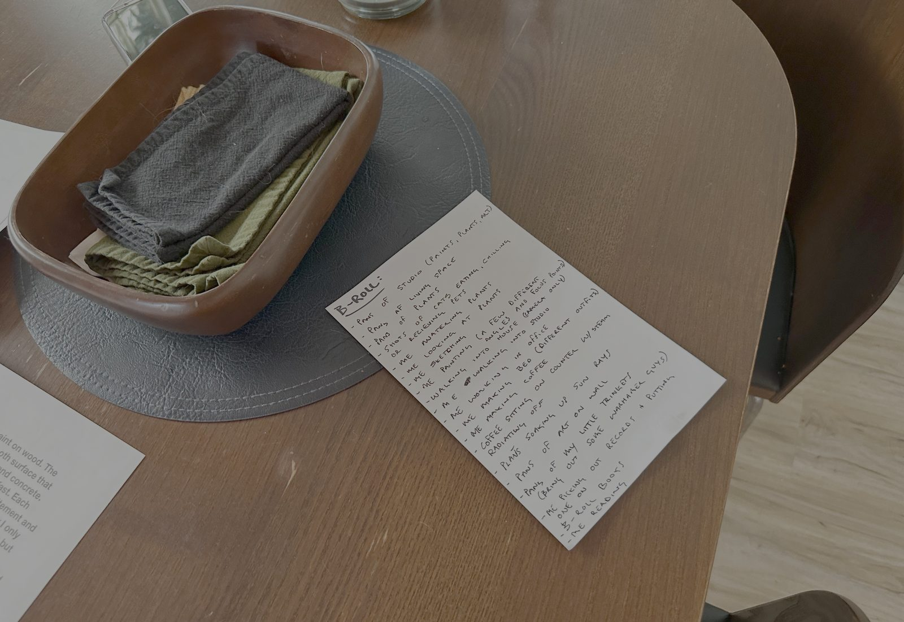
Natural light, minimal crew
Type
Artist Spotlight
Format
Independent
No brief, no clock
Crew
2 : Bobby on A-cam and the edit, Larry on B-cam
Larry brought the connection in
Shoot days
1 day · Mar 4, 2024
Ten in the morning to about seven
Approach
Natural light, minimal crew, authentic moments
Anthony wrote his own narration
Production
One day, one room
Mon, Mar 4, 2024Filmed : 1 dayHis home studio, start to finish : ten in the morning to about seven at night. Natural light, minimal crew, and enough time to let him forget the camera was there.
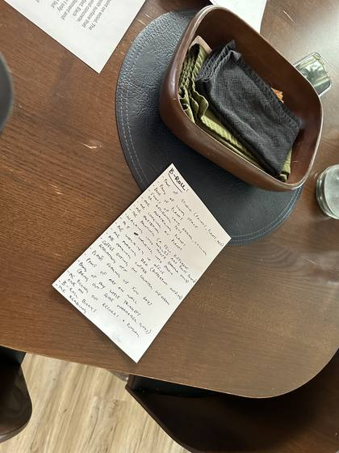
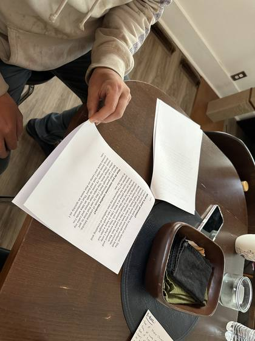
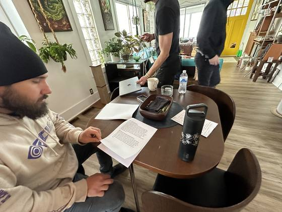
Behind the scenes11 photos
002Commercial · Brand Film2024
MOZ Interiors
Where luxury meets livability. A brand film for a Detroit interior design studio, built around spaces that were already doing the hard work.
Click to load · YouTube
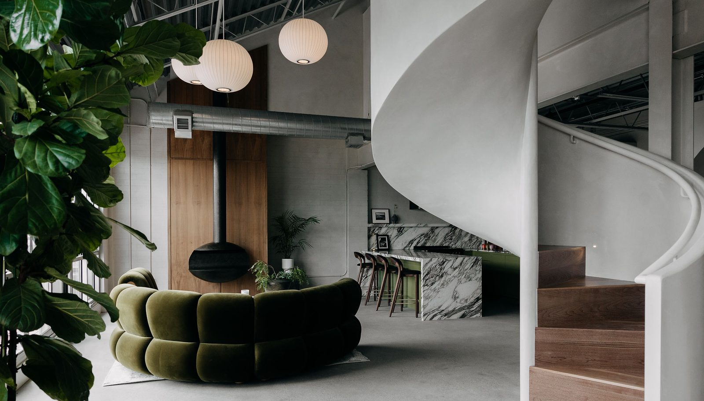
Photography: Shelby Dubin Photography
Type
Commercial · Brand Film
Format
Client brief
MOZ Interiors, Detroit
Crew
2 : Bobby on A-cam and the edit, Larry on B-cam
Shoot days
1 day · Jul 1, 2024
Concept
“Vintage vibes with modern modality”
About MOZ
Their interiors took Best Fireplace and Best Staircase at the 2025 Detroit Design Awards, and their work has run in Vanity Fair, Architectural Digest, Hour Detroit and The World of Interiors.
Mon, Jul 1, 2024Filmed : 1 dayOne pass through the spaces. The rooms were already finished; the job was to move through them without getting in the way.
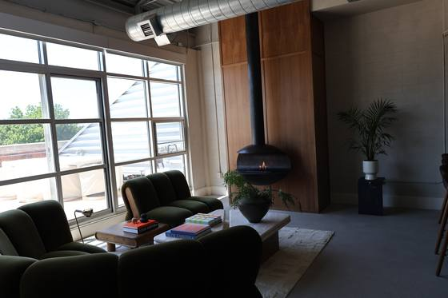
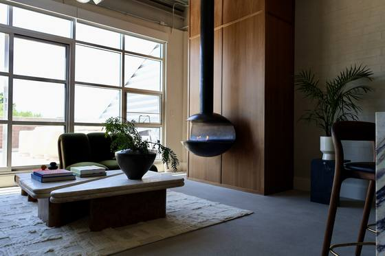
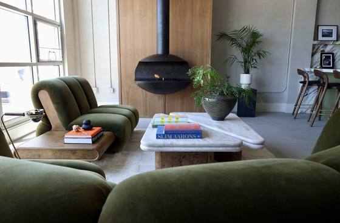
Behind the scenes12 photos
003Music Video · Live Session2024
The Pandys
Raw band practice energy captured live. Authentic performance from the studio sessions, with minimal production interference.
Click to load · YouTube
Captured live at rehearsal
Type
Music Video · Live Session
Format
Live session
One rehearsal, captured as it happened
Crew
2 : Bobby on camera and the edit, Larry on hand
Shoot days
1 day · January 2024
Track
“Old Guy”
from Nothing's Getting Better, It's Going to Be Fine
On drums
John, Larry's brother
Production
Single session
January 2024Filmed : 1 dayOne rehearsal session, captured live with as little interference as possible.
004Short Film · Horror2025
Trail Dead
Invisible threat. Visible dread. A horror short exploring tension and atmosphere : built almost entirely in the cut. Don't watch alone.
Click to load · YouTube
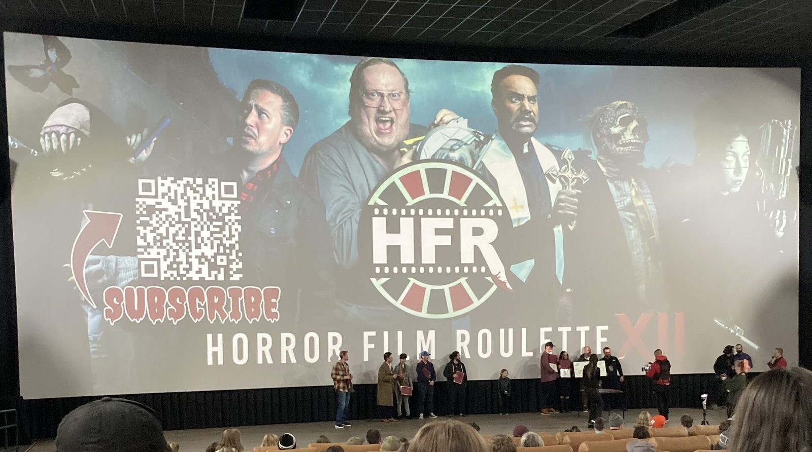
On location
Type
Short Film · Horror
Format
Timed competition
Constraints drawn on the day
Crew
3 : Bobby, Al & Al's dad
Co-directed, co-written, both acting
Shoot days
2 days · Sep 20–21, 2025
Recognition
Best Editing : Horror Film Roulette 2025
Production
51 days, roll to screen
Sep 5, 2025RolledDrew the constraints at the Horror Film Roulette kickoff : the clock starts the moment the wheel stops.
Sep 20–21, 2025Filmed : 2 daysShot in two days with a 3-person crew (Bobby, Al, and Al's dad) after rewriting the story.
Sep 27–29 → deadlineEdited : 2 daysAl cut the entire film in 2 days straight to the deadline. The award went to the thing built under pressure.
Oct 26, 2025Screened : Best EditingEmagine Royal Oak. The award went to the thing built under pressure.
Behind the scenes1 photo · 1 clip
Al spins the wheel : the constraints that became Trail Dead
005Short Film · Comedy2025
Lookout
Smart writing meets sharp timing. A comedy short that proves funny is hard.
Click to load · YouTube
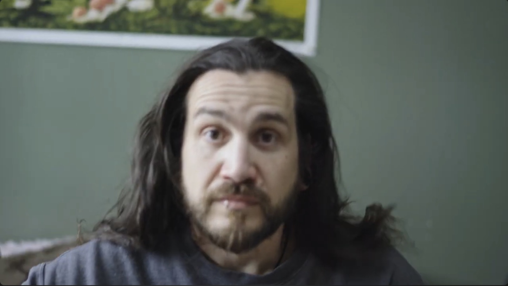
On set
Type
Short Film · Comedy
Format
Timed competition
The Comedy Roll, 2025
Crew
3 : Bobby, Al & Joe
Al directing, on camera and cutting
Shoot days
3 days · May 1, 5 & 20, 2025
Recognition
Top 25 : Comedy Roll Film Festival 2025
On camera
Derek & Kelly
Production
3 shoot days · Spring 2025
Thu, May 1, 2025Filmed : day oneThe day we had Derek and Kelly on camera.
Mon, May 5, 2025Filmed : day twoPickups.
Tue, May 20, 2025Filmed : day threeThe last of it.
2025Screened : Top 25The Comedy Roll. Comedy on a deadline is brutal, which is the whole appeal.
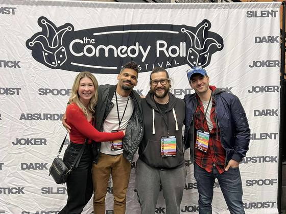
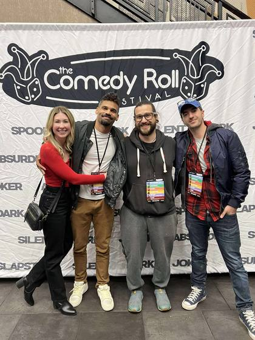
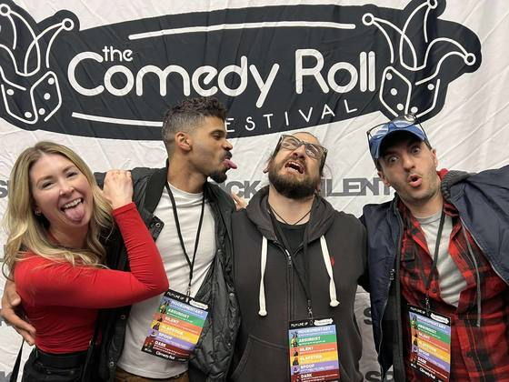
Behind the scenes12 photos · 1 clip
On set : Lookout
006Short Film · Comedy2026
It's a Boy
A late entry to The Comedy Roll, shot across four days in a Michigan spring. This is the cut that made the screening : a finished version is still in the works.
Click to load · YouTube
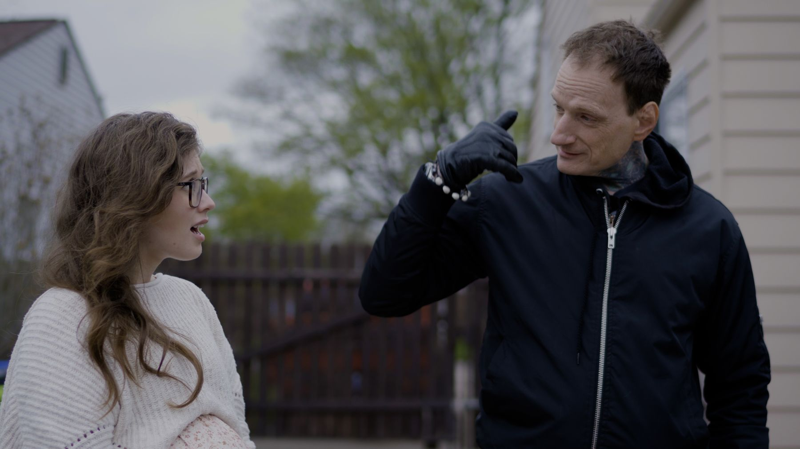
Shot on location, Michigan
Type
Short Film · Comedy
Format
Timed competition
The Comedy Roll, 2026 · late entry
Crew
13 : co-directed by Bobby & Al
The biggest ensemble LaB has run
Shoot days
4 days · Apr 25, 27, 28 & 29, 2026
Recognition
Screened : The Comedy Roll 2026
Status
Comedy Roll cut · public
Final cut in progress
Production
4 shoot days · 22 to screen
Apr 25, 27, 28, 29Filmed : 4 daysFour separate days across a Michigan spring: the 25th, 27th, 28th and 29th.
May 17, 2026ScreenedA late entry to The Comedy Roll : it made the room even though it only just made the deadline.
Aug 2, 2026Public releaseThe Comedy Roll cut is live on YouTube : the film above. A finished version follows when it's done.
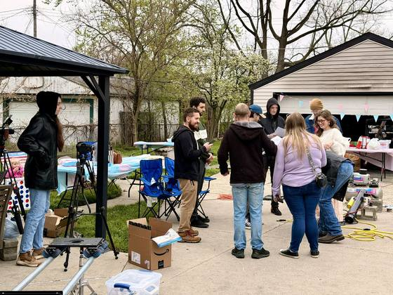
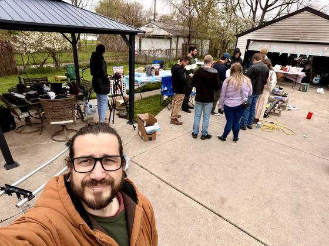
Behind the scenes27 photos
007Short Film · 48 Hour2026
Scattered
Made for the Detroit 48 Hour Film Project. Assignment Friday night, shot and cut across Saturday and Sunday, uploaded with six minutes left on the clock.
Best Use of Character · 3rd Best Film
Best Use of Character · 3rd Best Film - won from the 48HFP Detroit 2026 Best Of screening (top 15 of all Detroit entries). Awards held Aug 16, 2026 at The Civic Theater, Farmington.
Production
48 hours · 6 minutes to spare
Fri, Jul 24Got the assignmentGenre, character, prop and line handed out Friday night. Everything after this is on the clock.
Sat–Sun, Jul 25–26Filmed and editedBoth at once, across both days. There is no tidy handoff between shooting and cutting when the whole thing is 48 hours.
Sun, Jul 26Submitted : 6 minutes to spareUploaded with six minutes left on the clock.
Sat, Aug 2Premiered at Redford TheatreFirst festival screening, part of the 48HFP Detroit premiere run.
Sat, Aug 16Awards nightBest Use of Character (Joe plays as Bart Johns). 3rd Best Film out of the 15 Best Of films. Civic Theater, Farmington.
Poster by Sideways Studio
Type
Short Film · 48 Hour
Format
Timed competition
Detroit 48 Hour Film Project, 2026
Crew
4 : Bobby, Al, Joe & Kyle
Shoot days
2 days · Jul 25–26, 2026
Shot and cut at the same time
Team
Sideways Lab
Sideways Studio and LaB Media, mashed together for the weekend
Recognition
Best Use of Character · 3rd Best Film
48HFP Detroit 2026 · top 3 of the 15 Best Of films
Turnaround
48 hours, start to upload
Nominations
7 of the festival’s 14 awards
Film · Cinematography · Editing · Special Effects · Use of Prop · Use of Character · Make-Up
Behind the scenes12 photos · Jul 25–26, 2026
Premier screening11 photos · Aug 2, 2026 · Redford Theatre
A juice bar in Rochester, shot for Le Juicé and MOZ Interiors. Green millwork, terrazzo, brass and a lot of fruit : a room that was already photogenic before anyone turned a camera on.
In the edit
Shot June 1, 2026. The cut is in progress : the film lands here when it's finished.
Production
Single day shoot
Mon, Jun 1, 2026Filmed : 1 dayFour in the afternoon to ten at night, Veda and Al on it with Bobby. The room had never been open to anyone : they opened the week after we shot it. One pass through the space, working around the light coming off all that white marble.